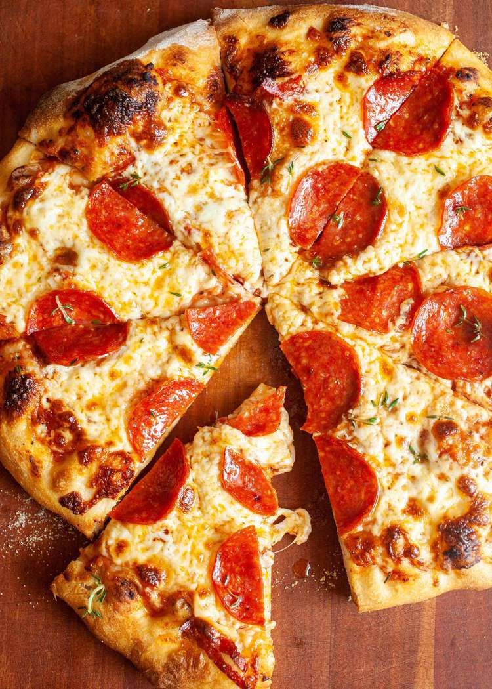

Pizza Recipe

Description
This pizza is made using Pizza dough, Pizza sauce, Pepperoni, mozzarella cheese, and ground black pepper. This recipe is one of the most popular among enthusiasts, and will be sure to blow your socks off!
Ingredients
- 16oz Pizza Dough
- 1/2 Cup Pizza Sauce
- Around 20 Pepperoni Slices
- 12oz Grated Mozzarella Cheese
Steps
- Preheat the oven to 400 degrees F
- Roll out the dough to a circle with around 14 inches diameter
- Lightly spread sauce on dough
- Add other toppings (Cheese, pepperoni)
- Cook pizza for 6 minutes, then rotate pizza halfway for another 6 minutes
- Evenly slice your pizza and enjoy!